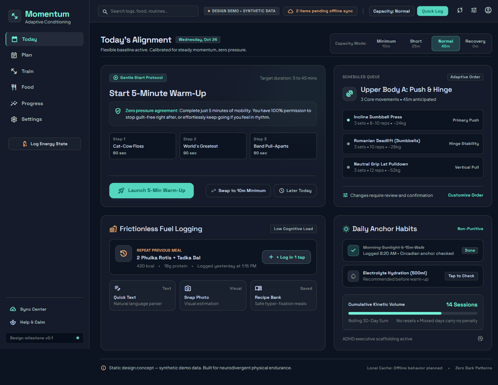
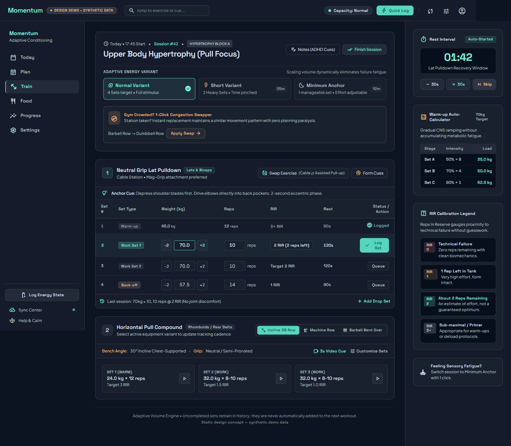
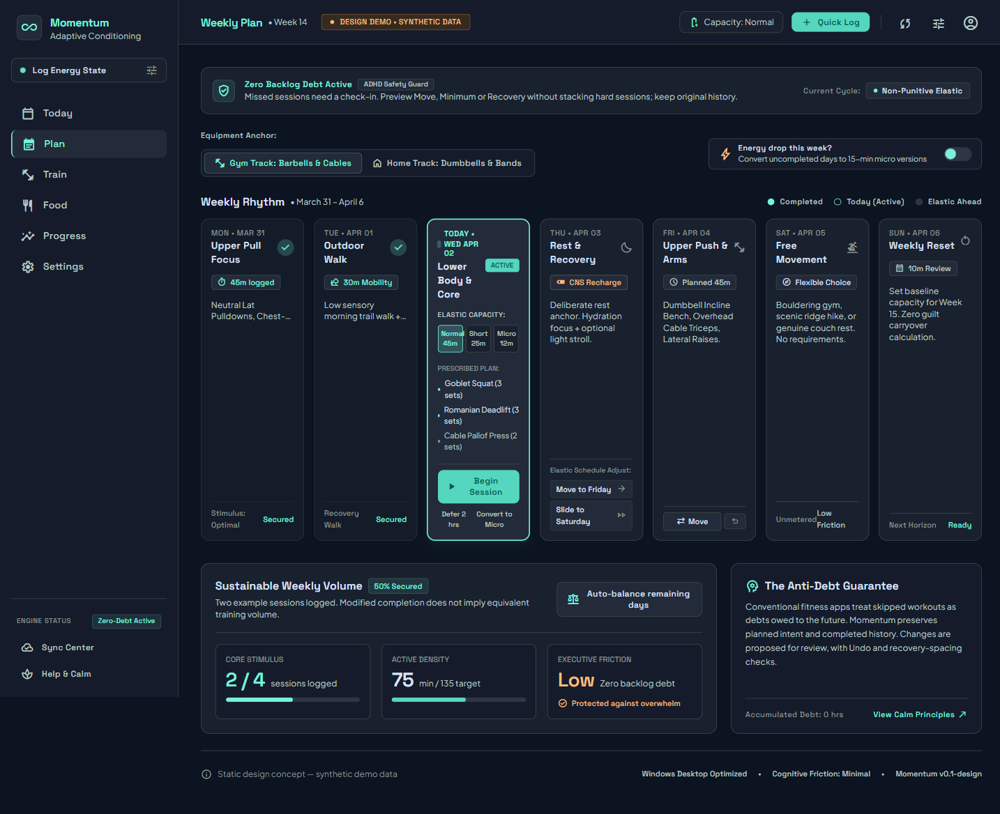
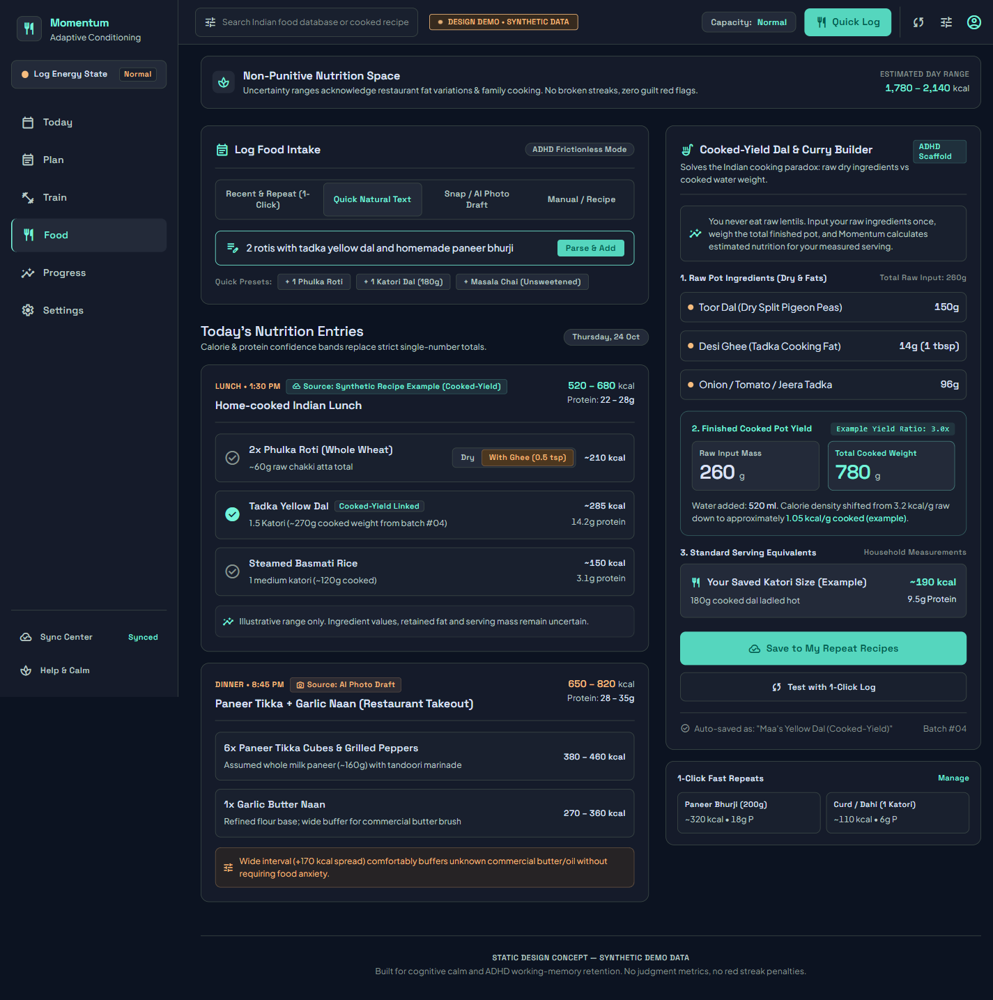
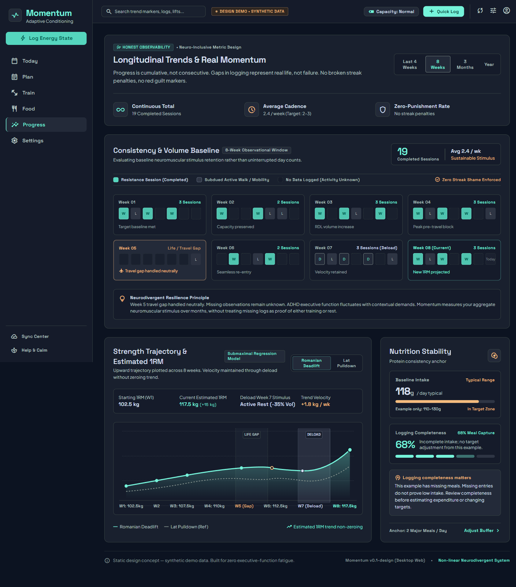
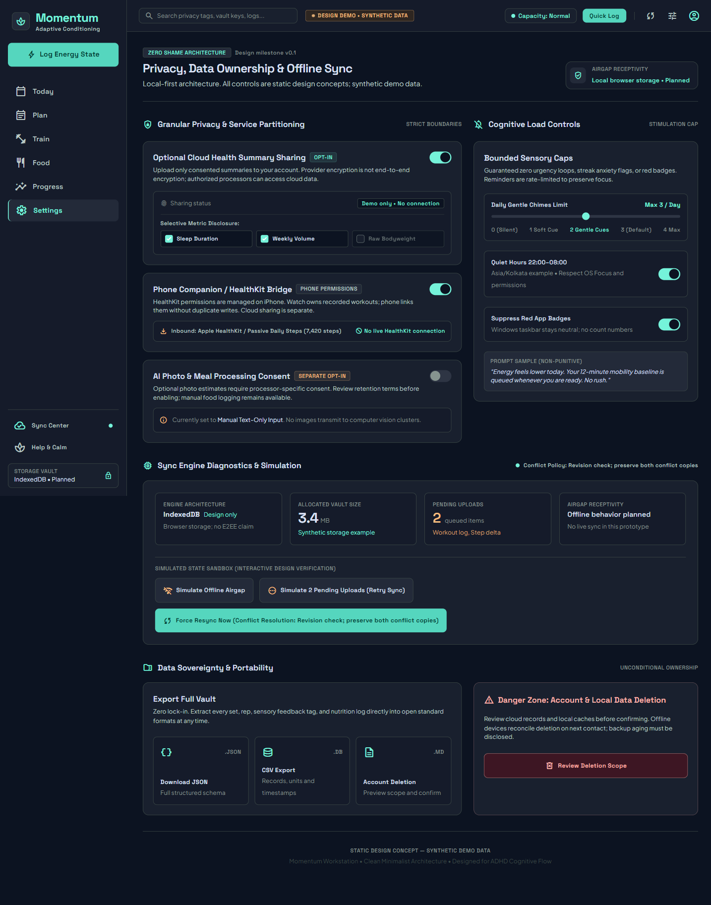
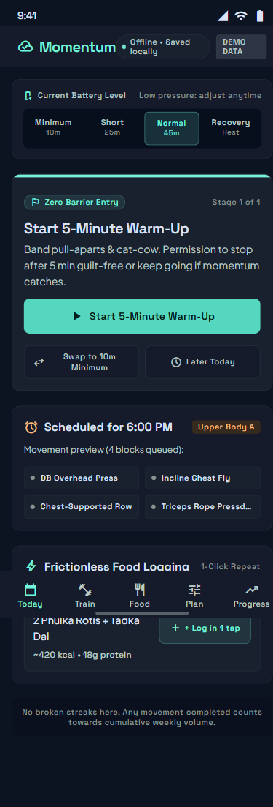
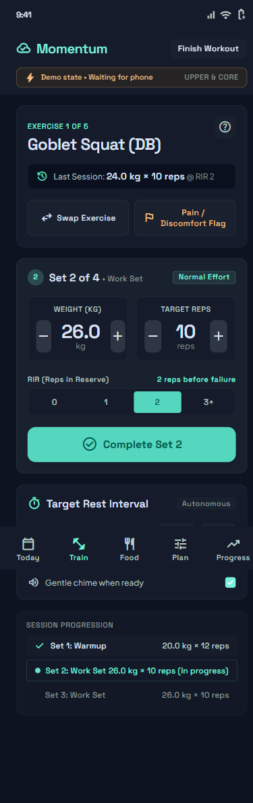
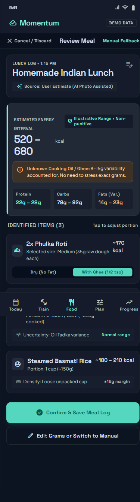
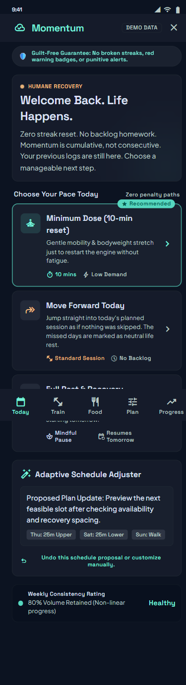

Momentum.
A routine with a way back.
Six desktop and four iPhone concepts created in Google Stitch. Synthetic data; static controls. Native apps, HealthKit and cloud sync are not implemented.
Open private Stitch project ↗ · Use the connected Google account.

Momentum - Today Dashboard
DESKTOP · Reviewed HTML concept ↗

Momentum - Training Editor
DESKTOP · Reviewed HTML concept ↗

Momentum - Weekly Plan
DESKTOP · Reviewed HTML concept ↗

Momentum - Food & Recipe Editor
DESKTOP · Reviewed HTML concept ↗

Momentum - Progress & Trends
DESKTOP · Reviewed HTML concept ↗

Momentum - Settings & Privacy
DESKTOP · Reviewed HTML concept ↗

Momentum Today Dashboard (iOS)
MOBILE · Reviewed HTML concept ↗

Momentum Active Workout (iOS)
MOBILE · Reviewed HTML concept ↗

Momentum Meal Review (iOS)
MOBILE · Reviewed HTML concept ↗

Momentum Missed-Day Recovery (iOS)
MOBILE · Reviewed HTML concept ↗
All sample food values and workout loads in these concepts are illustrative. See the separate sourced reference datasets for actual collected records.